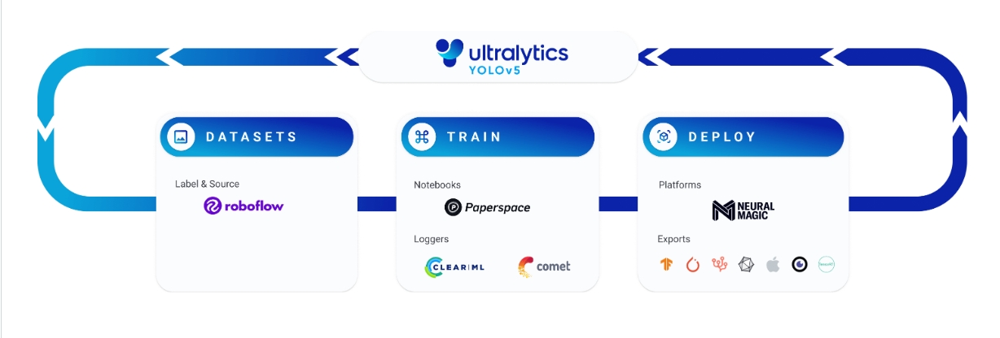
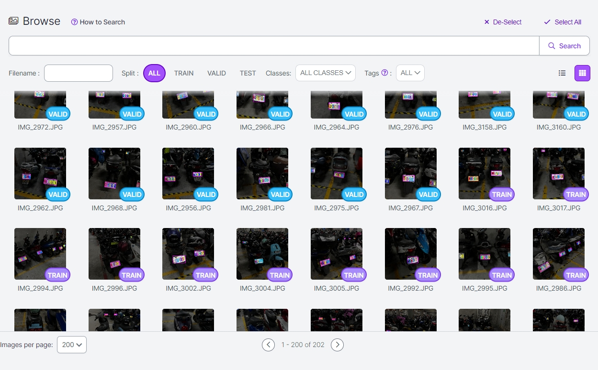

[Pytorch] 嘗試用Yolov5做車牌辨識
前言
Yolov5是什麼?
Yolov5是一種用於物件偵測的深度學習模型，它可以在圖像中找出並標記不同類別的物件。監督試學習是一種機器學習方法，它需要使用已經標註了正確答案的資料集來訓練模型。
Yolov5 訓練流程
先來看一下官網提供的一條龍服務
首先左邊資料蒐集完之後可以用roboflow進行標記，個人使用起來覺得比labelimg好用，而且也可以跨不同裝置，有點像colab登入帳號就能開始用。
圖中我大概標記了250張圖片，其中有順便標記車牌內的數字(這部分等到最後再說)，標記完後可以依個人習慣設定train,valid,test的比例。
標記完可以選擇要下載檔案或是用api的方式引入訓練腳本
colab官方腳本在這，再自行替換api_key
其中model可以自行成適合自己的，在執行的時候我用yolov5m ,–batch 128發現記憶體不足，所以將batch降低才能開始訓練。
這部分的參數可以參考:https://blog.csdn.net/weixin_41990671/article/details/107300314
訓練後就可以得到best.pt了
靜態圖片車牌辨識

這邊使用torch.hub導入訓練好的model進行推論
import torch
import cv2
from PIL import Image
def model_load(yolov5_path,model_path,chosse_classes):
model = torch.hub.load(yolov5_path, 'custom',model_path, source='local',force_reload=True)
model.classes = chosse_classes # class ='plate'
return model
torch.hub.load的導入參數有問題可以參考官方文件，這邊不贅述
def inference(img_path,model):
img = Image.open(img_path)
results = model(img)
plate = results.pandas().xyxy[0]
return img,plate
這邊是把圖片用載入的model進行推論
def crop_plates(img,plate):
img_tran = img.rotate(-90, expand=True)
for i in range(plate.index.array.size):
if plate['name'][i] == 'plate':
x = plate['xmin'][i]
y = plate['ymin'][i]
x2 = plate['xmax'][i]
y2 = plate['ymax'][i]
cropped = img_tran .crop((x, y, x2, y2))
cropped.save(f'./test/plate{i}.jpg')
print(f'save plate{i}.jpg success')
results.pandas().xyxy[0]會顯示出標記的四個座標，這邊用PIL的crop截取車牌並存檔
這邊不用cv2的原因是cv2不支援座標內有小數點
def main():
yolov5_path = 'path'
model_path = 'path'
chosse_classes = 36 # or None
img_path = 'path'
try:
print('import model')
model = model_load(yolov5_path,model_path,chosse_classes)
except:
print('import model fail')
try:
print('start inference')
img,plate = inference(img_path,model)
print('inference finish')
except:
print('inference error')
try:
crop_plates(img,plate)
except:
print('crop fail')
if __name__ == '__main__':
main()
自行帶入每個參數的路徑就可以執行了!
至於model.classes = 36 是指只推論編號第36的label，也就是plate，因為我當標記時順便把車牌內容也標進去了
如果不加這行就會把所有偵測到的classes都顯示出來
大致上到這邊就完成簡易的車牌辨識了!
關於車牌內文字辨識
講道開源OCR辨識就必須提到Tesseract及EasyOCR，不過一開始嘗試後發現效果不是太好，可能跟車牌角度不固定有關。
後來想說乾脆用yolo一起訓練成模型看看。
先上程式碼
import torch
import cv2
import numpy
from PIL import Image
def model_load(yolov5_path,model_path,chosse_classes):
model = torch.hub.load(yolov5_path, 'custom',model_path, source='local',force_reload=True)
model.classes = chosse_classes # class ='plate'
return model
def inference(img_path,model):
img = Image.open(img_path)
img = img.rotate(0, expand=True)
results = model(img,size=80)
results.show()
print(results.pandas().xyxy[0].sort_values(by="xmin",ascending=True))
def main():
yolov5_path = r'C:\Users\ansel_chen\VScode_Ansel\pytorch_practice\yolov5'
model_path = r'C:\Users\ansel_chen\VScode_Ansel\pytorch_practice\model\moto.pt'
chosse_classes = [i for i in range(35)]
img_path = r'C:\Users\ansel_chen\VScode_Ansel\pytorch_practice\torch_crop\test\plate.jpg'
try:
print('import model')
model = model_load(yolov5_path,model_path,chosse_classes)
except:
print('import model fail')
try:
print('start inference')
inference(img_path,model)
except:
print('inference error')
if __name__ == '__main__':
main()
跟剛剛用同一套模型只是拿掉plate的類別，之後再用sort_values(by=”xmin”,ascending=True)降冪排序讓偵測到的內容是由左至右!
很明顯辨識效果一樣沒有很好，畢竟訓練集沒有很完整，所以之後要用這個方法進辨識的話車牌的角度跟資料量就需要再更完整才行。